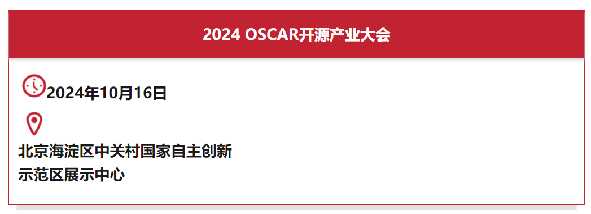
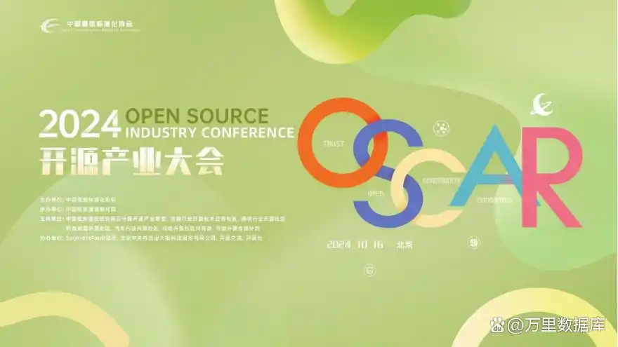

下周三见！与GreatSQL一起相约OSCAR 开源产业大会
10月16日，“2024 OSCAR开源产业大会”将在北京开幕。作为开源领域年度盛会，本届大会由中国通信标准化协会举办，汇聚国内外开源领域专家、学者、企业代表及开源社区成员，围绕开源技术最新发展趋势，分享开源治理宝贵经验、分析开源赋能产业应用，携手探索中国开源生态健康、有序的发展之路，旨在推动开源技术创新与产业协同发展，为全球开源事业的繁荣贡献中国智慧与力量。


GreatSQL作为国内知名的MySQL技术路线开源数据库社区，自成立以来，长期致力于推动开源文化的传播和开源技术创新。
在“开源项目社区与开源商业化”分论坛上，GreatSQL将带来《GreatSQL助力金融数字化提质增效》主题分享，以GreatSQL在实际应用实践中展现出的强大的大规模数据处理和金融级高可用场景能力，结合丰富的项目实施经验和社区支持能力，阐述GreatSQL如何一步步成长为企业级数据库解决方案中的佼佼者，先后服务金融行业各类场景，助力金融行业数字化提质增效。
此外，GreatSQL在OSCAR交流展示区和开源市集分别设置展位，将与大家分享GreatSQL与gt-checksum两大开源项目的最新进展和特色功能，展示社区在推动开源生态建设方面的努力与成就。与会者可以通过技术展示、互动活动、知识分享等多元现场互动，近距离了解开源数据库技术和社区文化。
同时，我们准备了丰富的社区礼品，以回馈广大开源爱好者和支持者。期待与您在OSCAR 开源产业大会与开源市集中相遇~
关于 OSCAR / 2024.10.16
“OSCAR开源产业大会”是由中国通信标准化协会主办，中国信息通信研究院承办，中国信息通信研究院云计算开源产业联盟、金融行业开源技术应用社区、通信行业开源社区、科技制造开源社区、汽车行业开源社区、可信开源社区共同体、可信开源合规计划支持的开源领域顶级盛会。
大会旨在汇聚全球开源领域的专家、学者、企业代表及社区成员，共同探讨开源技术的最新趋势、治理实践，以有效应对技术风险、法律合规、供应链韧性和人才短缺等挑战，从而寻求推动中国开源生态健康、有序发展的策略，促进开源与产业深度融合，为全球开源事业的繁荣贡献中国智慧与力量。
关于GreatSQL社区 / 2021-2024
GreatSQL 数据库是开放原子开源基金会旗下捐赠项目，拥有中国信通院可信开源社区+可信开源项目双认证。
GreatSQL数据库是一款开源免费数据库，可在普通硬件上满足金融级应用场景，具有高可用、高性能、高兼容、高安全等特性，可作为MySQL或Percona Server for MySQL的理想可选替换。
截至目前，GreatSQL已在金融、能源、通信、互联网等多个重点行业落地应用，与芯片、操作系统、存储、低代码平台等数十家生态伙伴达成合作。